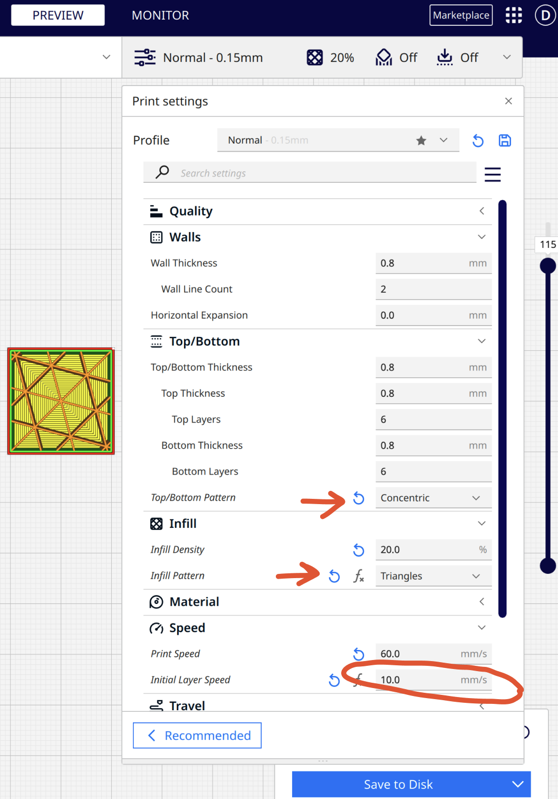
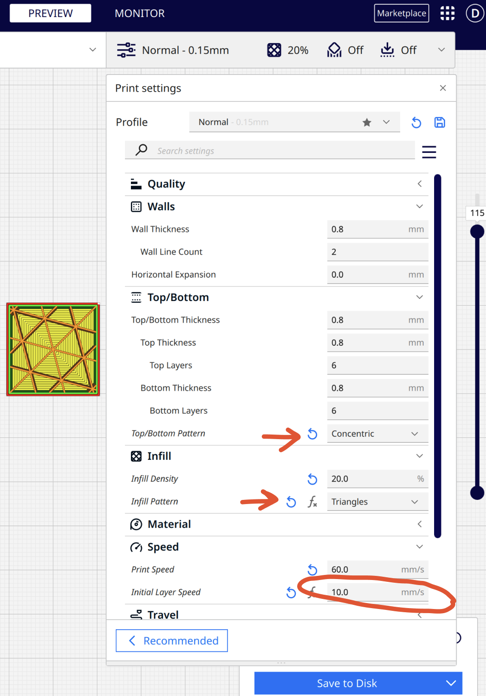
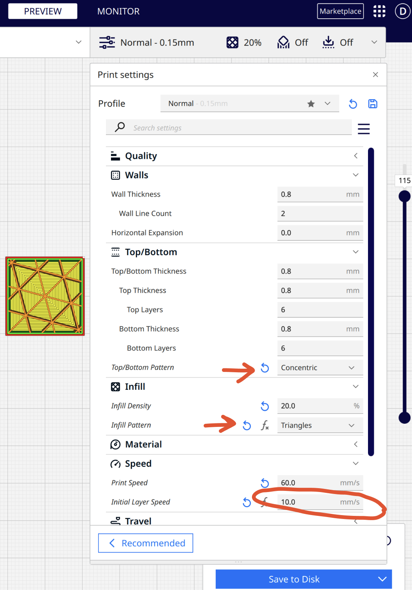
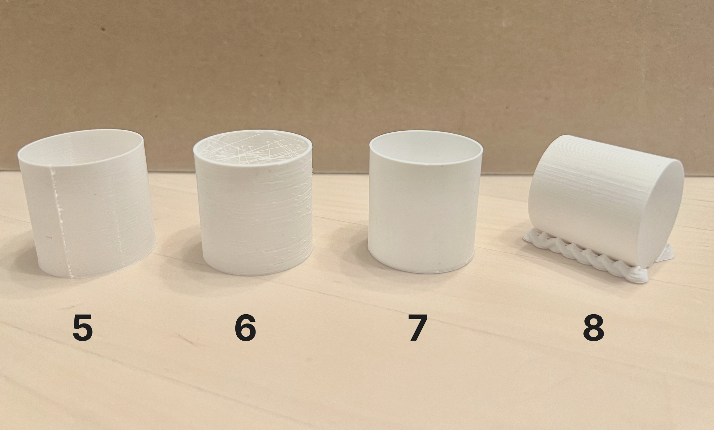

+ clips rhino
+ clips Cura project
+ puzzle shapes in illustrator
+ initial layer was getting stuck, so I reduced the standard 20mm/s → 10mm/s
+ also increased the internal support from 10% → 20%
+ CLEAN YO PRINTER BED!!!! (especially because dust accumulates even after an hour)
+ thanks to classmates: Flo, Sky, Tyler for helping me with all my 3D printing Qs!!
+ write up of process below :)
+ clips Cura project
+ puzzle shapes in illustrator
+ initial layer was getting stuck, so I reduced the standard 20mm/s → 10mm/s
+ also increased the internal support from 10% → 20%
+ CLEAN YO PRINTER BED!!!! (especially because dust accumulates even after an hour)
+ thanks to classmates: Flo, Sky, Tyler for helping me with all my 3D printing Qs!!
+ write up of process below :)
3D printing requirements:
1/ calibrate your process such that you can print within .2mm tolerance
2/ document print settings and print time
3/ Your clipped together cardboard needs to pass a shake test
1/ calibrate your process such that you can print within .2mm tolerance
2/ document print settings and print time
3/ Your clipped together cardboard needs to pass a shake test
Testing with cubes
I had a rough start with printer settings, especially the bed adhesion. But figured it out towards the end!
1/ cube - 2cm, standard "low quality" settings
+ Print time: 6min
+ Dimensions: 20.14mm H x 20.36mm W
+ Second print had NO Brim adhesion issues!
2/ cube - 2cm, standard "standard quality" settings
+ Print time: 10min
+ Dimensions: 20.02mm H x 20.14mm W
- Brim adhesion issues (due to machine shaking and dirty print bed)
3/ cube - 2cm, standard "super quality" settings
+ Print time: 1h 20min
+ Dimensions: 19.89mm H x 20.08mm W
+ Brim adhesion issues (due to machine shaking and dirty print bed)
4/ cube - 2 cm, concentric top and bottom layer, "standard quality" settings
+ Print time: ~20min
+ Dimensions: 19.94 mm H x 20 mm W
+ Initial layer was getting stuck, so I reduced the standard 20mm/s → 10mm/
+ Increased the support from 10% → 20%

 

1/ cube - 2cm, standard "low quality" settings
+ Print time: 6min
+ Dimensions: 20.14mm H x 20.36mm W
+ Second print had NO Brim adhesion issues!
2/ cube - 2cm, standard "standard quality" settings
+ Print time: 10min
+ Dimensions: 20.02mm H x 20.14mm W
- Brim adhesion issues (due to machine shaking and dirty print bed)
3/ cube - 2cm, standard "super quality" settings
+ Print time: 1h 20min
+ Dimensions: 19.89mm H x 20.08mm W
+ Brim adhesion issues (due to machine shaking and dirty print bed)
4/ cube - 2 cm, concentric top and bottom layer, "standard quality" settings
+ Print time: ~20min
+ Dimensions: 19.94 mm H x 20 mm W
+ Initial layer was getting stuck, so I reduced the standard 20mm/s → 10mm/
+ Increased the support from 10% → 20%

Testing with tubes, and cylinders
5/ tube - 3cm in diameter x 3cm high with a single extrusion wall thickness
+ Print time: ~40min
+ Dimensions: 30.09mm H x mm 29.91W, 0.5mm thickness
+ Second print had NO Brim adhesion issues!
6/ tube - 3cm in diameter x 3cm high with a double extrusion wall thickness and random z-seam alignment
+ Print time: 10min
+ Dimensions: mm H x mm W, mm thickness
- Brim adhesion issues (due to machine shaking and dirty print bed)
7/ cylinder - 3cm in diameter with special mode "spiralize outer contour"
+ Print time: 20min
+ Dimensions: 30.10mm H x 29.70mm W, 0.5mm thickness
+ Brim adhesion issues (due to machine shaking and dirty print bed)
8/ cylinder - 3cm in diameter printed on its side with supports on
+ Print time: ~20min
+ Dimensions: mm H x mm W

Prototyping
FAIL! This is why the first clip I printed was too small and also had only a 1mm gap for 3.6mm cardboard.

Designing and printing
What I did:
+ designed teeth that allowed a 2mm gap for the 3.6mm cardboard
+ create a thicker rounded external edge (rather than flat/thin) to prevent the teeth from bending outward
+ snuck in a little fun by cutting out a small flower in the clip (since I was making it for my child)
+ drew and cut some fun cardboard shapes for the clips to clip together :)
- the clip was a little snugg, but it was okay because cardboard has some give
- if I the clip was connecting a solid material, I'd need to make the claws more flexible or if it's a fixed shape clip, I'd need to design a gap that is closer to the thickness of the material being clipped

Final
Not really a shake gif here but you can see that my daughter had a hard time pulling the clips out. So they were super secure with the cardboard pieces.